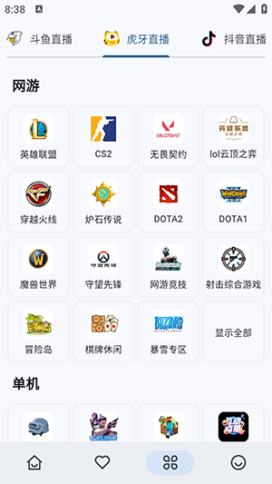
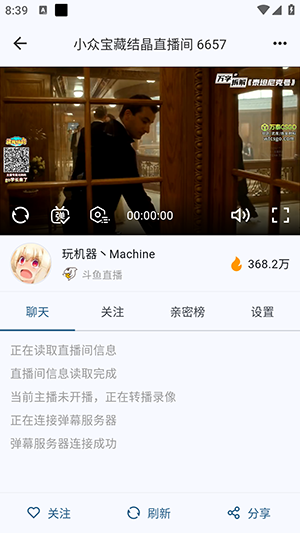

Simple Live 从零到流畅看全平台直播——手把手教你装好用好
多平台直播聚合工具 Simple Live 新手实战：安装权限、画质解锁、跨设备同步全流程走通，常见踩坑点提前规避。
读完这篇教程，你能在一台安卓手机上把 Simple Live 装好、解开斗鱼蓝光画质、关注的主播在手机和电视之间无缝同步。整个过程不涉及付费，也不用 root。
准备阶段
去Simple Live官网看看，它支持的平台覆盖主流直播站——斗鱼、虎牙、B 站、快手、抖音直播都在列表里。安装包格式是 APK，只要是安卓 8.0 以上的设备都能跑。电脑端还有 Windows、macOS、Linux 版本，桌面端有个便利功能是内置浏览器登录，比手机上手动拷 Cookie 省好几步。
前置条件就两个：
- 手机至少有 200MB 剩余空间
- 能从官方下载拿到 APK 安装包（别用第三方应用商店搜，版本会滞后）
第一步：解决安装拦截，把 APK 装上
这是国产手机用户最容易卡的环节，不是 Simple Live 有问题，是安卓系统默认不让装第三方来源的包。按你的手机品牌走一遍，大概三分钟搞定。
小米 / 红米
设置 → 应用设置 → 特殊权限 → 安装未知应用 → 找到你下载 APK 用的那个 App（浏览器或文件管理器）→ 打开开关。另外安全中心里还有一道单独的扫描：进安全中心 → 应用管理 → 把「安装未知应用扫描」关掉，不然就算权限给了，点击安装时还是会被拦一下。
华为 / 荣耀
设置 → 安全 → 更多安全设置 → 打开「允许未知来源应用下载」。手机管家的病毒查杀设置里，把「安装未知应用提示」也关掉，双重保险。
OPPO / vivo
设置 → 安全 → 直接开「允许安装未知来源应用」就行，这两家的系统拦截逻辑相对简单，通常只需要这一处。
实在装不上的兜底方案
还有两个小技巧可以试：把 APK 复制到手机内部存储的根目录（路径是 /storage/emulated/0/），然后用系统自带的文件管理器去找它，别在浏览器内直接点击安装。部分国产 ROM 对下载目录和 SD 卡上的 APK 拦截更严，挪个位置就能过。

第二步：导入斗鱼 Cookie，解锁蓝光画质
装好之后打开 App，随便点进一个斗鱼直播间。你会发现画质档位停在 1080P 就封顶了，蓝光和原画档完全看不到。这不是 App 缺功能，是斗鱼对未登录用户做了限制。导入 Cookie 就能解锁完整档位。
获取 Cookie
电脑上用 Chrome 或 Edge 打开斗鱼网页版，登录你的账号。按 F12 打开开发者工具，切到「网络」标签，刷新页面一下。在请求列表里随便点一个，右侧详情面板里找到 Cookie 字段，把全部内容完整复制下来。
导入 Cookie
回到手机上的 Simple Live，进「设置 → 账号管理 → 斗鱼直播」，找到 Cookie 登录入口，粘贴进去。保存后退出当前直播间再重新进一次——画质切换面板里应该就能看到蓝光档了。
Cookie 有效期注意一下：斗鱼的 Cookie 比抖音和 B 站短很多，可能几天就过期。如果某天突然发现画质又退回到 1080P，大概率就是这个原因，重新走一遍获取导入流程就行。

第三步：搞懂画质档位，别让带宽浪费
Simple Live 的画质档位不是一刀切，不同平台给的选项不一样。核心逻辑就一条——档位越高，带宽消耗越大。如果你在地铁上用移动网，硬看蓝光档只会越看越卡，没必要。
| 档位 | 带宽消耗 | 适用场景 |
|---|---|---|
| 流畅/标清 | ~1Mbps | 移动网络、弱 Wi-Fi |
| 720P 高清 | 2~4Mbps | 一般观看，够用了 |
| 1080P | 4~8Mbps | 看游戏细节 |
| 1080P60 | 6~10Mbps | 高速电竞直播，画面更流畅 |
| 蓝光/原画 | 8~15Mbps | 大屏显示设备、追求画质 |
App 会根据当前带宽情况给一个推荐档位，但不会强制切换。你选了蓝光它就尽力加载蓝光，加载不上你自己手动降档。这个设计挺好——不替你做决定，但把选择给你。
第四步：跨设备同步关注列表
手机上关注了一堆主播，回到客厅打开电视却要重新搜索一遍，这种体验确实糟心。Simple Live 提供了三种同步方式，覆盖从最简单到稍微折腾的场景。
设备间直接发现：如果手机和电视在同一个 Wi-Fi 局域网，这是最省心的方式——打开两端的同步开关，App 会自动扫描到对方，点一下确认就配好了。
WebDAV 服务器：有自建云盘或 NAS 的用户适合这个。填一下服务器地址和账号密码，两端连上去就能互相同步。配置难度中等，一次配好之后自动跑。
Cloudflare Worker：不想自己搭服务器但又想跨网络同步（比如手机在外面用 4G、电视在家用宽带），可以用这个方案。需要部署一个 Worker 脚本，步骤多一些，但一次搞定后不受网络环境限制。
同步内容包括关注的主播和房间、自定义的收藏分组、开播提醒开关状态。Cookie 凭据、弹幕设置、主题外观这些各自保留，不会互相覆盖。同步时机可以手动点「立即同步」，也能设成每次启动自动同步，或者每 30 分钟定时跑一次——三种同步方式的详细配置在Simple Live文档里有完整步骤。

新手常踩的三个坑
坑一：权限给了还是装不上
很多人只给了浏览器安装未知应用的权限，忘了手机管家还有一层扫描拦截。装不上时别急着怀疑安装包有问题，先检查手机管家的病毒查杀设置里有没有关掉安装拦截提示。
坑二：Cookie 导入后画质没变
要么是 Cookie 复制不全——开发者工具里 Cookie 字段的内容要完整复制，别只挑了一部分；要么是导入后没退直播间重新进，App 不会实时刷新档位列表。
坑三：跨设备同步搜不到对方
确认两端都在同一个 Wi-Fi 下，路由器没开「AP 隔离」（部分高端路由器默认开启这个功能，会阻止同设备互相发现）。如果一直搜不到，换 WebDAV 方案更稳。
往下还能玩什么
桌面版有内置浏览器登录，Cookie 导入比手机端省不少事；主题可以切深色或浅色；弹幕设置里能调字号和透明度。这些功能藏在设置里，装好之后慢慢翻一翻就能找到。我自己用下来还发现几个冷门技巧，等有空再写。对了，这份资料我在三个仓库都存了备份——GitHub、Gitee、GitCode，国内连 Gitee 和 GitCode 比 GitHub 顺畅不少。